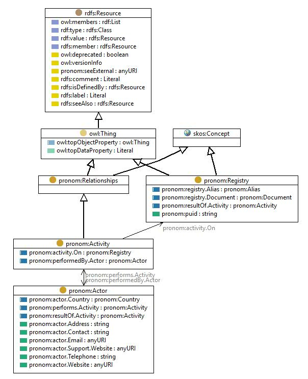

http://data.nationalarchives.gov.uk/formatregistry/def/Activity
Class pronom:Activity

rdf:type
owl:Class
rdfs:comment
The group of relationships associated with activities by actors with other entities
rdfs:label
Activity relationship
rdfs:subClassOf
pronom:Relationships
skos:prefLabel
Activity relationship
References
as rdfs:domain (
pronom:performedBy.Actor
,
pronom:activity on
)
as rdfs:range (
pronom:performs activity
,
pronom:result of activity
)
as rdfs:subClassOf (
pronom:PublishingActivity
,
pronom:SourcingActivity
,
pronom:Authoring activity
,
pronom:SupportingActivity
,
pronom:MaintainingActivity
,
pronom:DevelopingActivity
)
Generated with
TopBraid Composer
by
TopQuadrant, Inc.